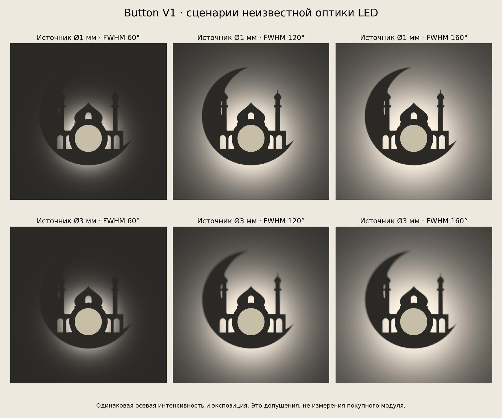

Меньше деталей. Сменный световой модуль.
Три печатные детали · ≈65 г PETG · короткая PMMA-втулка 22 мм. Кнопка обращена в комнату, светодиод — к стене. Предыдущие варианты сохранены.
До заказа и полной печати: Ø10×32 мм взяты с фотографии автора. Посадка, батарейки и диаграмма LED пока не подтверждены. Сначала один модуль и пробники посадки. Ниже показаны сценарии, а не обещание яркости товара. Перейти к покупкам.
Вращайте мышью или пальцем, масштабируйте колесом. Модуль показан условным непрозрачным объёмом; сама линза не изображена как физически точная. Батарейки находятся внутри покупного модуля. Короткая втулка покупная, не печатная.
Камеру можно вращать. Тень получена трассировкой STL с преломлением короткой PMMA-втулки. Размер источника переключает два расчёта; угол меняет предполагаемое распределение света. Это не измеренные параметры лампочки. Одинаковая осевая интенсивность, абсолютная яркость и автономность неизвестны. Цвет показан нейтральным условно.

Изображение недоступно
Чем уже диаграмма, тем слабее края картины. Чем больше видимый источник, тем мягче границы. Все изображения при одинаковой условной экспозиции. Контур — собственный полумесяц с мечетью, а не иллюстрация генератора.
Сборка и ограничения
LED вставляется со стороны комнаты до плечика держателя. Кнопка остаётся доступна, модуль вынимается для смены батареек. Его не приклеивать. Втулка вклеивается только в посадочные места после проверки положения источника.
Глубина плечика относительно оптического центра пока принята 4 мм. Если реальный модуль отличается, держатель нужно пересчитать. Сначала напечатайте пробник Ø10,4 мм. Короткий клеевой шов под кнопкой требует испытания на нажатие; поддерживайте узел рукой.
Непрозрачный корпус модуля и держатель находятся со стороны комнаты и закрывают прямой вид на источник спереди. Боковые блики через PMMA не проверены. Полная инструкция и ограничения расчёта
Что и где купить
Сначала один LED-модуль. Полный заказ имеет смысл после проверки размеров и тени.
| Деталь | Количество | Ссылка и условия |
|---|---|---|
| Кнопочный модуль постоянного белого света | 1 | AliExpress — ссылка автора. Одиночный широкоугольный straw-hat LED, ориентир Ø10×32 мм. Наличие, цена, доставка и батарейки не подтверждены. |
| PMMA Ø10/6 ×22 мм | 1 отрезок | Vitrinenschmidt. Прежняя цена €3,81 за 600 мм, итог уточнить. Заказать распил 22 мм. |
| Чёрный PETG | ≈65 г + пробники/поддержки | Имеющийся непрозрачный филамент. При условных €20/кг материал модели ≈€1,30. |
| Клей для посадок втулки | немного | UHU Plus Schnellfest — кандидат. Проверить PMMA–PETG на обрезке; сцепление не испытано. |
| Крепёж на стену | 2 точки | Под материал стены. Стержень до 3,5 мм; головка для отверстия Ø7,2 мм и паза 3,6 мм. |
| Батарейки | по модулю | По маркировке приобретённого модуля. Тип пока неизвестен; CR2032 из другого варианта автора автоматически не подходит. |
Не покупать для этой версии: SST-12, отдельный драйвер, плату MCPCB, алюминий, термопасту, отсек AA и проводку.